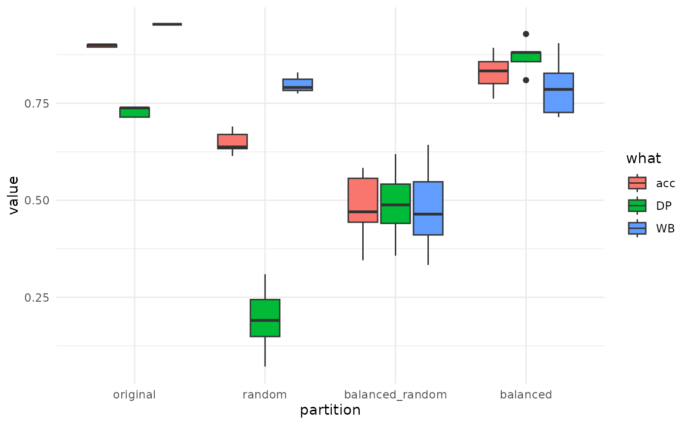
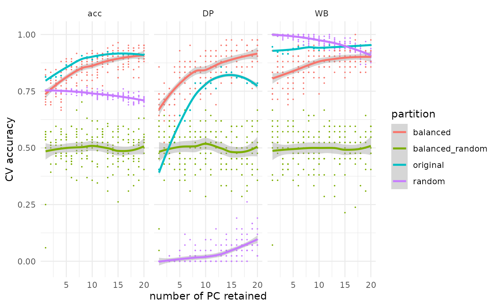

manual.Rmd| title: “How to use and build on mevolCVP2” |
| output: rmarkdown::html_vignette |
| vignette: > |
| % |
| % |
| % |
## Foreword ### History
This tiny package (finally) makes available the idea coined by Allowen Evin and colleagues in Journal of Archaeological Science in 2013.
This approach was previously available as a single script (circa 2013), then wrapped into a package (circa 2018) without any change to the code and not released on CRAN.
Here, we rethink and rewrote the latter code to have something easier to build upon.
### The idea The Evin et al. (2013) paper, among others, used “predictive” discriminant analyses in morphometrical analyses, particularly in the context of landmark-based morphometrics which uses principal component analyses prior to LDA.
The idea was two-fold: i) parameterize the optimal number of principal components to retain for further linear discriminant analyses, and ii) evaluate the effects of unbalanced sample sized between groups for further LDA.
Yet this approach deeply changed the way we see, parameterize and do LDAs unsing morphometrics data, it actually boils down, statistically, to the following two core ideas and to the very few and thin functions included in that package.
We present the rationale behind this package, then how it works in practice, and finally how to extend it to your own needs.
### The rationale
The rational of permutationnal and parameterized discriminant analyses boils down to: both the number of variables and the balance between groups size matter for linear discriminant analyses.
- The number of variables is discriminant analyses matters and can be optimized.
This is typically the case for landmark approaches where a “preliminary” PCA mandatory and its components later used for LDA. But even for outline-based approaches, where quantitative variables are not orthogonal and independant by construction, their number also matters.
In other words, the common view that a linear discriminant analysis accuracy increases monotonously with the number of variables you feed it with is wrong.
Of course, we let apart here many other fundamental aspects such as measurement error, it is neither reasonable nor meaningful (nor even allowed) to use 200 principal components or 60 harmonics to train models that will ultimately be used on degraded archaeological material (or even fresh)
-
The group sample sizes matters. In spite of prior
used by default in LDA (eg in
MASS::lda), the class proportions is not enough to unbias class predictions and consequently global accuracy. In other words, if you have a dataset with 90% of class A and 10% of class B, you will “mechanically” have a better cross-validation accuracy for class A and likely an optimistic global accuracy too. This is definitely not what we want when we do LDA, particularly when we used trained models to then make predictions, for example in the archaeological context.
We realized both i) and ii) empirically and yet we are confident that these can probably be explained mathematically we never find out how and why.
Along the last ~10 years (2014->2024), we thus systematically investigated the number of components (or harmonics) to retain and used permutations to obtain balanced datasets.
As a side effect, the use of permutationnal approaches typically allows to obtain the true distribution of , in other words to compare model performances against pure random. For morphometrical studies, this allowed to detect subtle yet significant morphological signals even with relatively low accuracies. In other words, even a model with 60% accuracy (which is far from impressive) may be better than random (ie a binomial or a coin) and thus reveal a true morphological signal.
## mevolCVP2 in practice
### Dependencies
First thing first, you can install the package with:
# install.packages("pak")
pak::pak("vbonhomme/mevolCVP2")Once it will be released on CRAN, this will install the last release from CRAN:
install.packages("mevolCVP2")We first load the package using library. We also specify
a random seed
which is a good idea to have the best of both worlds: randomness
and replicability across your sessions.
We will also use a couple of packages from the tidyverse so we load them now:
Data presentation
Here, all analyses will start with a data.frame
with:
- the first column being the grouping structure that can be turned into a factor (eg a factor or character)
- at least one other column being a (or many more) quantitative variable.
Such a dataset is available within the package, named
pig (see ?pig) and borrowed from the
JAS paper. Let’s have a look to the first and last 3 rows and
the first 3 variables columns:
minipig <- pig[c(1:3, 168:171), 1:4]
minipig
#> # A tibble: 7 × 4
#> sp PC1 PC2 PC3
#> <fct> <dbl> <dbl> <dbl>
#> 1 WB -0.0247 0.00722 -0.000179
#> 2 WB -0.00864 0.0240 -0.000265
#> 3 WB 0.0254 -0.000168 0.0101
#> 4 DP 0.0000239 0.0106 0.00964
#> 5 DP -0.0420 0.00126 -0.00753
#> 6 DP -0.0121 0.00378 -0.00159
#> 7 DP -0.0504 -0.000302 0.00555Helpers
Below we present helpers and recipes that can easily be reused to you own analyses.
Randomizing and selecting columns
Three core helpers will ease the common operations.
-
randomizeshuffles the first column, ie randomize grouping labels; -
balanceresample rows using the grouping labels, so that there arenindividuals in each group.n_indis, by default, the smallest group size. Also, sampling is done withreplace=TRUEby default -
retainwill select onlyn_colfrom variables columns (all by default).
randomize(minipig) # look at the first column
#> # A tibble: 7 × 4
#> sp PC1 PC2 PC3
#> <fct> <dbl> <dbl> <dbl>
#> 1 DP -0.0247 0.00722 -0.000179
#> 2 WB -0.00864 0.0240 -0.000265
#> 3 DP 0.0254 -0.000168 0.0101
#> 4 WB 0.0000239 0.0106 0.00964
#> 5 DP -0.0420 0.00126 -0.00753
#> 6 WB -0.0121 0.00378 -0.00159
#> 7 DP -0.0504 -0.000302 0.00555
balance(minipig, n_ind=2) # count rows in each group
#> # A tibble: 4 × 4
#> sp PC1 PC2 PC3
#> <fct> <dbl> <dbl> <dbl>
#> 1 DP 0.0000239 0.0106 0.00964
#> 2 DP -0.0420 0.00126 -0.00753
#> 3 WB -0.00864 0.0240 -0.000265
#> 4 WB 0.0254 -0.000168 0.0101
retain(minipig, n_col=2) # count quantitative variables columns
#> # A tibble: 7 × 3
#> sp PC1 PC2
#> <fct> <dbl> <dbl>
#> 1 WB -0.0247 0.00722
#> 2 WB -0.00864 0.0240
#> 3 WB 0.0254 -0.000168
#> 4 DP 0.0000239 0.0106
#> 5 DP -0.0420 0.00126
#> 6 DP -0.0121 0.00378
#> 7 DP -0.0504 -0.000302To ease permutations, they are wrapped in partition()
that returns a list with four different datasets with self-explanatory
names:
pigs1 <- partition(minipig, n_ind=3)
pigs1
#> $original
#> # A tibble: 7 × 4
#> sp PC1 PC2 PC3
#> <fct> <dbl> <dbl> <dbl>
#> 1 WB -0.0247 0.00722 -0.000179
#> 2 WB -0.00864 0.0240 -0.000265
#> 3 WB 0.0254 -0.000168 0.0101
#> 4 DP 0.0000239 0.0106 0.00964
#> 5 DP -0.0420 0.00126 -0.00753
#> 6 DP -0.0121 0.00378 -0.00159
#> 7 DP -0.0504 -0.000302 0.00555
#>
#> $random
#> # A tibble: 7 × 4
#> sp PC1 PC2 PC3
#> <fct> <dbl> <dbl> <dbl>
#> 1 DP -0.0247 0.00722 -0.000179
#> 2 DP -0.00864 0.0240 -0.000265
#> 3 WB 0.0254 -0.000168 0.0101
#> 4 DP 0.0000239 0.0106 0.00964
#> 5 WB -0.0420 0.00126 -0.00753
#> 6 DP -0.0121 0.00378 -0.00159
#> 7 WB -0.0504 -0.000302 0.00555
#>
#> $balanced
#> # A tibble: 6 × 4
#> sp PC1 PC2 PC3
#> <fct> <dbl> <dbl> <dbl>
#> 1 DP -0.0504 -0.000302 0.00555
#> 2 DP 0.0000239 0.0106 0.00964
#> 3 DP -0.0420 0.00126 -0.00753
#> 4 WB -0.0247 0.00722 -0.000179
#> 5 WB -0.0247 0.00722 -0.000179
#> 6 WB -0.0247 0.00722 -0.000179
#>
#> $balanced_random
#> # A tibble: 6 × 4
#> sp PC1 PC2 PC3
#> <fct> <dbl> <dbl> <dbl>
#> 1 DP 0.0000239 0.0106 0.00964
#> 2 WB 0.0000239 0.0106 0.00964
#> 3 DP -0.0504 -0.000302 0.00555
#> 4 WB -0.00864 0.0240 -0.000265
#> 5 DP -0.0247 0.00722 -0.000179
#> 6 WB 0.0254 -0.000168 0.0101LDA calculation and digestion
The workhorse of this package is a thin wrapper on top of
MASS::lda that directly returns the confusion matrix.
MASS::lda is passed with CV=TRUE which returns
leave-one-out cross-validated predictions, digested into a confusion
matrix. Let’s try it on the full pig dataset:
cm <- lda1(pig)We can calculate accuracy indices on this confusion matrix. We will later see how to obtain additional metrics from the latter.
acc(cm)
#> acc
#> 0.8947368
acc_classes(cm)
#> DP WB
#> 0.7142857 0.9534884
acc_all(cm)
#> acc DP WB
#> 0.8947368 0.7142857 0.9534884pig is “highly” unbalanced in terms of sample sizes
between the two groups. We expect a naive LDA on this dataset to be
biased and an LDA on balanced dataset to be more realistic in terms of
class accuracies.
pig %>% lda1() %>% acc_classes()
#> DP WB
#> 0.7380952 0.9534884
pig %>% balance() %>% lda1() %>% acc_classes()
#> DP WB
#> 0.8809524 0.8333333Above, we observe that the class accuracy of the WB
group (larger by more than a factor 3) is drastically reduced and
actually performs less well than DP.
Whether these values are better than pure random have to be properly tested. We expect, in such binary case, something around 50/50 for pure random (ie a binomial) but we can be away from this ideal case.
We already have pretty much everything we need!
In action: balancing and permutating
A single round
Now, we gonna go take profit of functionnal programming tools provided by purrr. If you are not familiar with this package, stop everything and go have a look to it.
pig %>% partition() %>% map(\(.df1) .df1 %>% lda1() %>% acc_all())
#> $original
#> acc DP WB
#> 0.8947368 0.7142857 0.9534884
#>
#> $random
#> acc DP WB
#> 0.6257310 0.1666667 0.7751938
#>
#> $balanced
#> acc DP WB
#> 0.9642857 0.9523810 0.9761905
#>
#> $balanced_random
#> acc DP WB
#> 0.4642857 0.5476190 0.3809524The results above should reflect the expectations and results we observed before, doing it “by hand”, line after line.
Let’s wrap this into a function that would accept any dataset. We
also arrange a bit what comes out of the map into a nice
and named tibble.
perm1 <- function(x) {
x %>%
partition() %>%
map(\(.x) .x %>% lda1() %>% acc_all()) %>%
do.call("rbind", .) %>% as_tibble(rownames = "partition")
}
pig %>% perm1()
#> # A tibble: 4 × 4
#> partition acc DP WB
#> <chr> <dbl> <dbl> <dbl>
#> 1 original 0.895 0.714 0.953
#> 2 random 0.673 0.167 0.837
#> 3 balanced 0.810 0.857 0.762
#> 4 balanced_random 0.321 0.333 0.310Can you see where we’re going here? So let fun begins and we let’s replicate these permutations.
More than a single round
Here we go for 10 rounds for the sake of speed while writing and compiling the package but feel free to change it by your side.
We will come back to the full pig and use a
map variant, the _dfr version, that directly
rbinds the intermediate list into a tibble. Feel free try the raw
map below.
Everything that follows will adhere to this idea: combine the
few helpers, do permutations using map and friends,
summarize and graph.
K=10
pig10 <- map_dfr(seq_len(K), \(iter) pig %>% perm1())
head(pig10)
#> # A tibble: 6 × 4
#> partition acc DP WB
#> <chr> <dbl> <dbl> <dbl>
#> 1 original 0.901 0.738 0.953
#> 2 random 0.637 0.143 0.798
#> 3 balanced 0.821 0.929 0.714
#> 4 balanced_random 0.571 0.595 0.548
#> 5 original 0.895 0.714 0.953
#> 6 random 0.637 0.190 0.783Let’s summarise this a bit with dplyr so that we can
summatise the mean and the SD:
pig10 %>%
group_by(partition) %>%
summarize(across(everything(), c("median"=median, "sd"=sd)))
#> # A tibble: 4 × 7
#> partition acc_median acc_sd DP_median DP_sd WB_median WB_sd
#> <chr> <dbl> <dbl> <dbl> <dbl> <dbl> <dbl>
#> 1 balanced 0.833 0.0413 0.881 0.0408 0.786 0.0659
#> 2 balanced_random 0.470 0.0764 0.488 0.0856 0.464 0.0985
#> 3 original 0.901 0.00302 0.738 0.0123 0.953 0
#> 4 random 0.637 0.0260 0.190 0.0778 0.791 0.0203Summary and graph
Alternatively, to get a more compact table:
mean_sd <- function(x) paste0(round(mean(x), 3), "±", round(sd(x), 3))
pig10 %>%
group_by(partition) %>%
summarize(across(everything(), mean_sd))
#> # A tibble: 4 × 4
#> partition acc DP WB
#> <chr> <chr> <chr> <chr>
#> 1 balanced 0.83±0.041 0.871±0.041 0.788±0.066
#> 2 balanced_random 0.487±0.076 0.49±0.086 0.483±0.099
#> 3 original 0.898±0.003 0.729±0.012 0.953±0
#> 4 random 0.649±0.026 0.19±0.078 0.798±0.02We can also have a nice graph after a little pivoting step to please
ggplot2:
pig10 %>%
mutate(partition=factor(partition,
levels=c("original", "random", "balanced_random", "balanced"), ordered=TRUE)) %>% # order partition for graphics purposes
pivot_longer(acc:last_col(), names_to = "what") %>% # pivot the tibble to a longer form
ggplot() +
aes(x=partition, y=value, fill=what) +
geom_boxplot() +
theme_minimal()
The original results is the one you would obtain without touching your original dataset: global accuracy is overestimated as weel as WB class. When you look at balanced this is corrected. This model performs clearly better than balanced_random which is pure random. Sounds like there is a strong morphological signal in there!
In action: adding variable selection
Let’s sophisticate a bit the perm1 function to allow for
selecting more or less variables to feed the LDA with. We simply add a
n_col argument that we pass to retain(),
coined before partition():
perm2 <- function(x, n_col) {
x %>%
retain(n_col) %>%
partition() %>%
map(\(.x) .x %>% lda1() %>% acc_all()) %>%
do.call("rbind", .) %>% as_tibble(rownames = "partition")
}We expect that 20 components would perform better than a single one. Let’s check it on a single round, and indeed:
pig %>% perm2(1)
#> # A tibble: 4 × 4
#> partition acc DP WB
#> <chr> <dbl> <dbl> <dbl>
#> 1 original 0.813 0.405 0.946
#> 2 random 0.754 0 1
#> 3 balanced 0.774 0.762 0.786
#> 4 balanced_random 0.548 0.5 0.595
pig %>% perm2(20)
#> # A tibble: 4 × 4
#> partition acc DP WB
#> <chr> <dbl> <dbl> <dbl>
#> 1 original 0.912 0.786 0.953
#> 2 random 0.684 0.0952 0.876
#> 3 balanced 0.940 0.952 0.929
#> 4 balanced_random 0.524 0.5 0.548We can easily write this into a map. We also record the number of
variables and make it return directly a single, rbinded data.frame with
map_dfr:
z <- map_dfr(1:20, \(n_col) pig %>% perm2(n_col) %>% mutate(retain=n_col, .before=1))
head(z)
#> # A tibble: 6 × 5
#> retain partition acc DP WB
#> <int> <chr> <dbl> <dbl> <dbl>
#> 1 1 original 0.813 0.405 0.946
#> 2 1 random 0.754 0 1
#> 3 1 balanced 0.798 0.810 0.786
#> 4 1 balanced_random 0.560 0.619 0.5
#> 5 2 original 0.807 0.452 0.922
#> 6 2 random 0.754 0 1To replicate this calculation K times, we simply wrap it into an
additional layer of map:
K=10
z <- map_dfr(seq_len(K),
\(iter) map_dfr(1:20, \(n_col) pig %>% perm2(n_col) %>% mutate(retain=n_col, .before=1)) %>%
mutate(iter=iter, .before=1)
)
head(z)
#> # A tibble: 6 × 6
#> iter retain partition acc DP WB
#> <int> <int> <chr> <dbl> <dbl> <dbl>
#> 1 1 1 original 0.813 0.405 0.946
#> 2 1 1 random 0.754 0 1
#> 3 1 1 balanced 0.821 0.714 0.929
#> 4 1 1 balanced_random 0.536 0.452 0.619
#> 5 1 2 original 0.807 0.452 0.922
#> 6 1 2 random 0.754 0 1Let’s plot this beauty:
z %>%
pivot_longer(acc:last_col(), names_to="metric") %>%
ggplot() +
aes(x=retain, y=value, col=partition) +
geom_point(size=0.1) +
geom_smooth() +
facet_grid(~metric) +
xlab("number of PC retained") +
ylab("CV accuracy") +
theme_minimal()
#> `geom_smooth()` using method = 'loess' and formula = 'y ~ x'